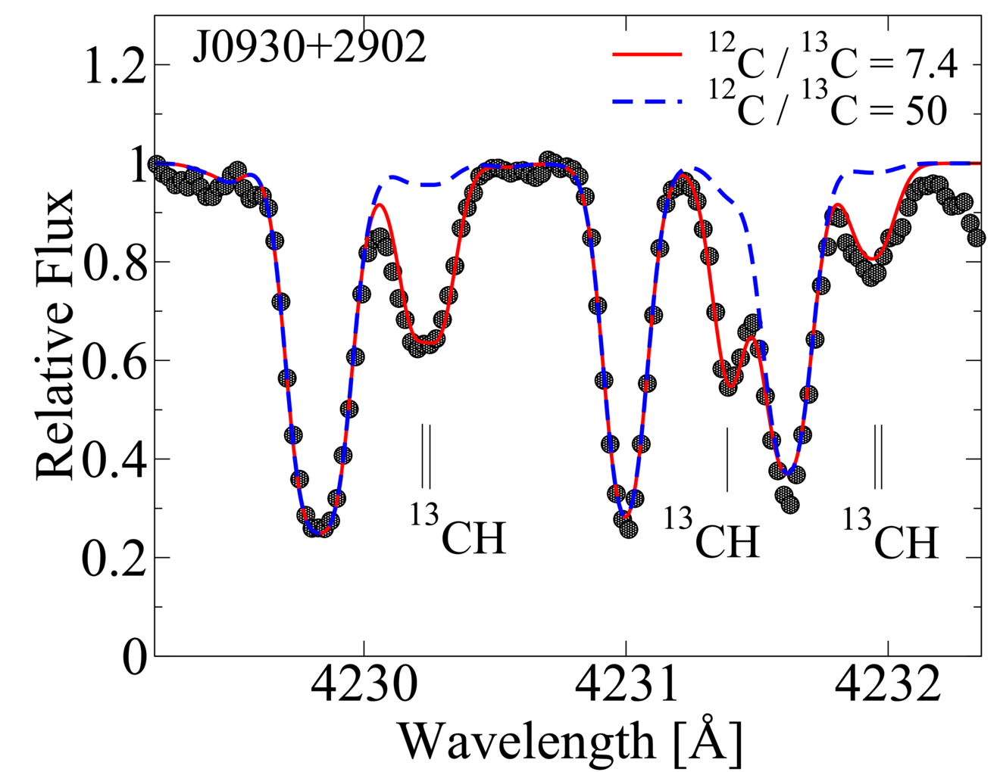
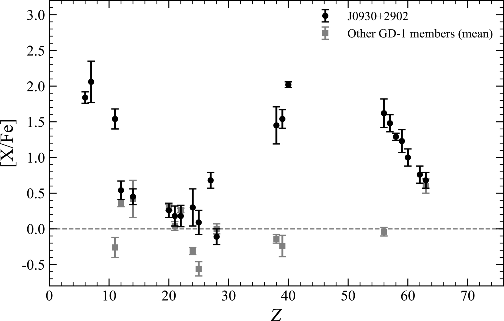
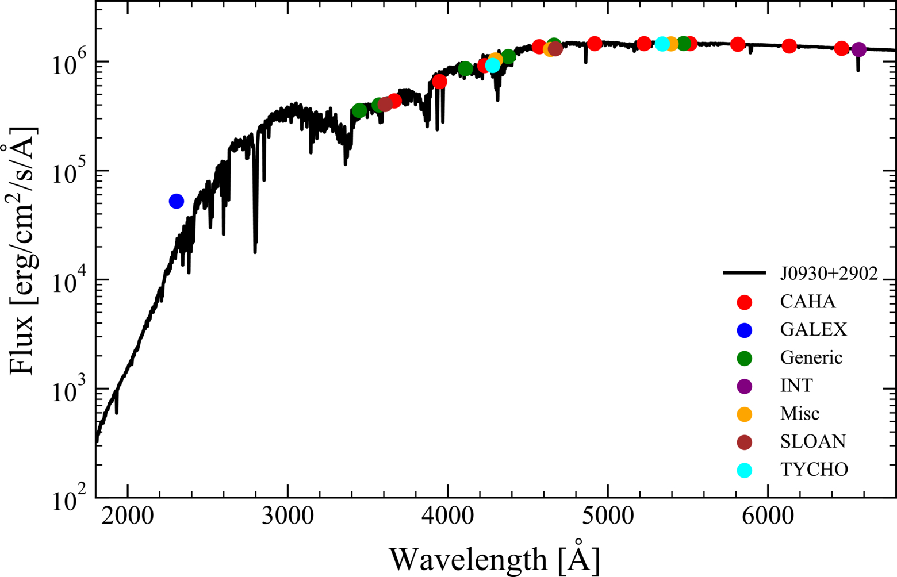
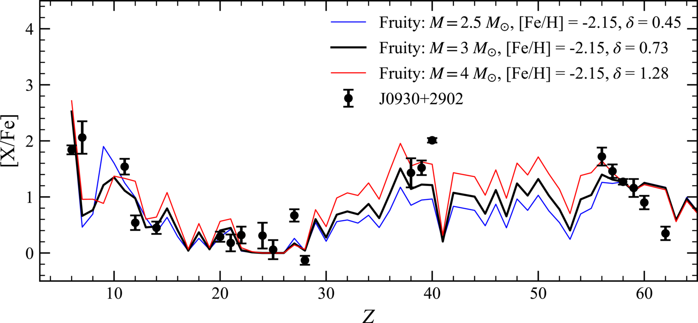

Research Watch
記事公開：2026年11月28日 · 他の研究者の論文紹介
銀河に残る古い星が、かつての伴星の組成を伝える GD-1恒星ストリームに見つかった質量移動の痕跡
天の川銀河の中には、かつて一つの星団などに属していた星が、銀河の重力によって引き伸ばされ、細い列を作っている場所があります。GD-1と呼ばれる恒星ストリームもその一つです。Yangらは、このストリームに属する星の一つ、J0930+2902の元素組成に、かつて別の星から物質を受け取った痕跡を見つけました。
ApJ Letters 2026年11月25日出版（1012, L28）原著を読む
星の表面に刻まれた元素の記録
一般に、古い星の元素組成を調べると、その星が生まれた頃の宇宙にどのような元素が存在していたのかを知ることができます。しかし連星を構成する星は、進化の途中で互いに物質をやり取りすることがあります。より早く進化した星から受け取った物質が、相手の星の表面に残る場合があるのです。
今回の研究では、すばる望遠鏡の高分散分光器HDSによって得られたスペクトルから22種類の元素の量が求められました。鉄などに比べて炭素が多く、窒素やナトリウム、さらに遅い中性子捕獲反応（s過程）で作られる元素も豊富でした。炭素の二つの同位体、炭素12と炭素13の存在量の比は7.4でした。

図1（原著図3） 横軸は波長（Å）、縦軸は規格化した光の強さです。黒点はすばる望遠鏡による観測で、赤の実線と青の破線は炭素12と炭素13の比をそれぞれ7.4と50にした計算です。炭素13を含む分子の吸収のくぼみは、比を7.4とした赤線のほうがよく説明しています。
Guochao Yangほか（2026）。 原著 · 図と原著キャプション · CC BY 4.0 。出版社の高解像度JPEGを無加工で掲載。
図を原寸で拡大する

図2（原著図5） 横軸は元素の原子番号、縦軸は鉄に対する各元素の比を太陽と比較した値です。黒丸はJ0930+2902、灰色の四角は同じ恒星ストリームの他の6星の平均で、灰色の縦棒は6星のばらつきです。対象星の重元素の比率は、比較できる他の星より高くなっています。
Guochao Yangほか（2026）。 原著 · 図と原著キャプション · CC BY 4.0 。出版社の高解像度JPEGを無加工で掲載。 比較値は同研究グループの先行研究の測定値。
図を原寸で拡大する
物質を渡した星はどこにいるのか
炭素やs過程の元素を作り、周囲へ供給する天体として、AGB星が知られています。これらの星は進化の晩年に外層の物質を放出し、やがて中心部に白色矮星を残します。J0930+2902の化学組成も、以前AGB星だった伴星から物質が移動した場合に期待される特徴を持っています。
この天体では視線方向の速度が大きく変化し、近紫外線の放射にも超過が見られました。著者らは、これらを白色矮星の伴星が存在することを支持する別の証拠としています。元素合成モデルとの比較では、物質を渡した星の誕生時の質量は太陽のおよそ3倍とするモデルが、中性子捕獲元素の組成をよく説明しました。これはかつての伴星の質量を直接測定した値ではありません。

図3（原著図6） 横軸は波長、縦軸は各波長での光の強さです。色付きの点が各観測の測定値、黒線は対象星一つの大気モデルです。可視光ではモデルと測定値がほぼ重なりますが、GALEXの近紫外の青点はモデルより明るく、熱い伴星を想定する理由の一つになっています。
Guochao Yangほか（2026）。 原著 · 図と原著キャプション · CC BY 4.0 。出版社の高解像度JPEGを無加工で掲載。 測光データは GALEX、CAHA、SDSS など。
図を原寸で拡大する

図4（原著図7） 横軸は原子番号、縦軸は鉄に対する元素比を太陽と比較した値です。黒点と誤差棒のうち、SrからSmまでは元からあったと見積もられる成分を差し引いています。青・黒・赤の線は物質を渡した星の初期質量をそれぞれ太陽の2.5・3・4倍としたFRUITYモデルで、質量の推定にはこの重元素群を使っています。
Guochao Yangほか（2026）。 原著 · 図と原著キャプション · CC BY 4.0 。出版社の高解像度JPEGを無加工で掲載。
図を原寸で拡大する
同じストリームに属する他の星と組成が異なるからといって、直ちに生まれた場所が異なることを意味するわけではありません。この研究は、恒星ストリームに属する一つの星の化学組成に、連星間の物質移動の痕跡が残っているという解釈を支持しています。物質移動が母星団の崩壊の前後どちらで起きたかは分かっていません。